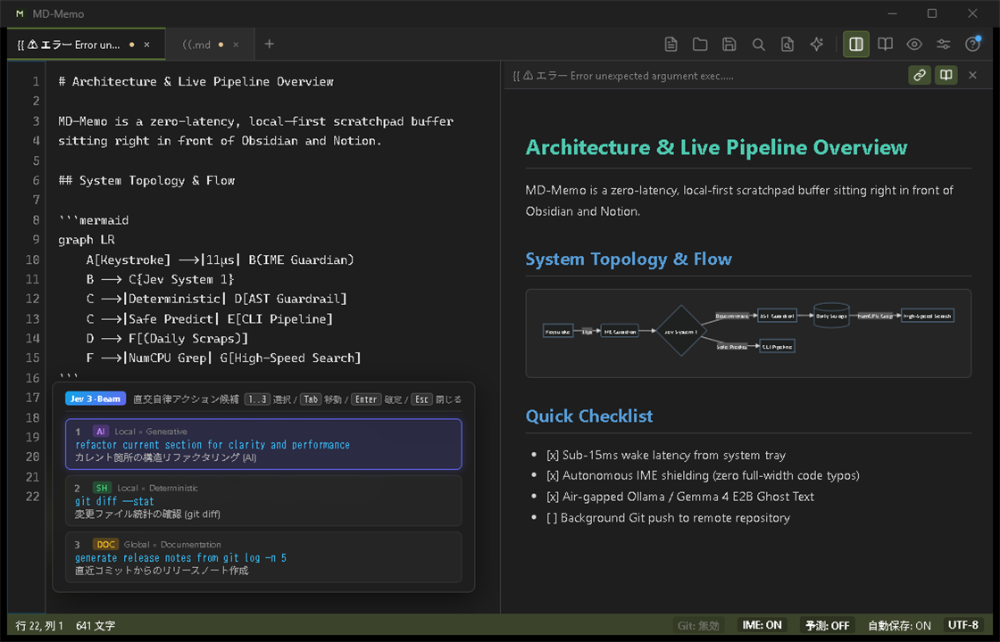

ObsidianやNotionの保管庫の手前に置く、復帰15ms・待機メモリ5MBの即時入力バッファ。
自律型IMEシールドとオフラインAIを備えた、思考キャプチャツール。

Obsidian や Notion に代表されるナレッジベースは情報の蓄積・構造化には卓越していますが、起動に数秒かかり、思考の熱量を削いでしまいます。
MD-Memo は保管庫（Vault）を置き換えるものではありません。その手前で思考を一瞬も逃さず書き留める「摩擦ゼロの即時メモ帳（スクラッチパッド）」です。
| 比較項目 | 一般的なテキストエディタ | ナレッジ保管庫 (Notion / Obsidian) | MD-Memo |
|---|---|---|---|
| アーキテクチャ | C++ / Swift / Rust | Electron / Chromium (重厚) | Go 1.26 + OS ネイティブ WebView |
| 復帰レイテンシ | ~100ms (コールド起動) | 2.0s – 5.0s (JS初期化待ち) | < 15ms (システムトレイ常駐) |
| 待機メモリ | ~15 MB | 400 MB – 800 MB+ | 5 – 15 MB (積極的 GC 回収) |
| IME 制御 | OS まかせ（全角誤爆頻発） | OS まかせ | 自律型 IME シールド (全角自動排除) |
| AI 補完 | クラウド依存 (有料/要APIキー) | クラウド依存 / 拡張プラグイン | ローカル (Ollama) / 任意でCloud AI |
| データ保存 | プレーンテキスト | 独自DB / クラウド同期 | 100% ローカル POSIX プレーンテキスト |
目立たず、待たせず、思考を遮らない。プロダクトの細部に宿るエンジニアリング。
トレイ常駐から Ctrl+Alt+M（Mac: Option+Cmd+M）で瞬時に復元。ウィンドウ最小化時は debug.FreeOSMemory() でワーキングセットを 5〜15MB まで極限まで縮小。
インラインコード（`...`）やブロック、URLの内部では全角文字を自動インターセプト。誤って半角モードで入力したローマ字拍動も対数尤度比検定（LLRT）で検知し自動補正。
完全オフラインで推論可能なローカル Ollama / vLLM と連携。外部へのデータ流出を防ぎながら、Ctrl+→ で高速予測補完。Vision OCR などの高度推論時はクラウドAIも柔軟に選択可能。
ターミナルから cat build.log | md-memo で起動中インスタンスへミリ秒転送。さらに Ctrl+Shift+E で安全な自然言語 OS コマンドエージェントを実行可能。
runtime.NumCPU() のワーカースレッドとゼロアロケーション並列スキャナにより、過去のデイリースクラップ（scraps/YYYY-MM-DD.md）全体を瞬時に Grep 検索。
キー操作停止から 30 秒のアイドル後にバックグラウンドで自動コミット＆プッシュ。アプリ起動時には自動リベース。設定画面で Git リポジトリ URL を指定するだけで完全同期。
視覚情報からマークダウンへの自動構造化、安全なOSターミナル自動化、そしてCPUマルチコアによる瞬時Grep検索。
OS標準の矩形選択キャプチャ（Win+Shift+S / Cmd+Shift+4）で画面やUIモックを切り取り、MD-Memo上で Ctrl+V（ペースト）するだけ。専用ソフトやアップロード画面を開くことなく、画像内の情報をマークダウンとして即時バッファ展開します。
[画像マークダウン変換中 (Gemini)...] を非同期挿入し、入力をブロックしません。
| 列 |）、見出し階層、インデント付き箇条書き、Mermaid図解候補を自動判別して構造化。
```typescript 等）を推定したフェンスドコードブロックとしてクリーンに展開。手動での打ち直しを根絶します。
エディタを独立した孤島にせず、OSやターミナルとの双方向データパイプラインとして機能させます。自然言語指示からシェルコマンドを自動生成し、AST安全解析で厳格に保護した上で非同期実行します。
cat build.log | md-memo や docker logs ... | md-memo。TCP IPC（127.0.0.1:49152）経由でデイリースクラップ（scraps/YYYY-MM-DD.md）へミリ秒転送。
jq、prettier、sort などのローカルCLI標準入力に流し込み、整形結果で選択範囲をインプレース置換。
「あの時のメモどこだっけ？」をゼロ秒で解決。Ctrl+Shift+F（Mac: Cmd+Shift+F）で、蓄積された全デイリースクラップ（scraps/YYYY-MM-DD.md）をインメモリ並列走査します。
bufio.Scanner により、大量の過去スクラップをゼロアロケーションで並列スキャン。数千ファイルでも瞬時に完了。
↓/↑ で選び、Enter を押すと該当スクラップを開いて該当行へスムーズスクロール＆ハイライト。
思考のノイズになるグラデーションや余分な装飾を削ぎ落とし、タイポグラフィとマークダウンの美しさに徹したインターフェース。
プロダクトデザイナー、デザインエンジニア、ソフトウェア開発者、リサーチャーの現場に溶け込む具体例。
ヒアリング中にブラウザやFigmaを見ながら、ホットキー一発でオーバーレイ。自律型IMEシールドが作動するため、日本語と英語の専門用語が混在しても入力モードのミスタッチで手が止まりません。
UIステートやモーダルの遷移ロジックをテキストで書きながら、リアルタイムにMermaidダイアグラムで視覚確認（Ctrl+\）。ドキュメントと図面が単一のプレーンテキストとして同期します。
docker logs ... | md-memo や curl ... | md-memo でターミナル出力をそのままスクラッチパッドへ直結。Ctrl+Shift+B で jq や prettier フィルタを通し、AIに即時解析させます。
MD-Memoの保存先を作業中Obsidian Vaultの Daily Notes/ フォルダに直接指定。日中の殴り書きやエラーメモは最速のMD-Memoで行い、夕方にObsidianでリンクネットワークに組み込みます。
マウスに手を伸ばす必要はありません。すべてのコアアクションは指先に最適化されています。
[ フロントエンド: 等幅キャンバス / Ghost Overlay / スクラップ検索UI ]
▲
│ 双方向RPCブリッジ (Wails / Native WebView)
▼
[ コアエンジン: Go 1.26 / OSネイティブWebView / ネイティブダイアログ (COM/Cocoa) ]
│
├─► CLIパイプ & TCP IPC (127.0.0.1:49152)
├─► ローカルLLMエンジン (Ollama / vLLM / LM Studio)
├─► デイリースクラップ集約 (scraps/YYYY-MM-DD.md)
├─► 並列Grepエンジン (runtime.NumCPU() ゼロアロケーションスキャン)
├─► バックグラウンドGit同期 (30秒アイドル時サイレントPush)
├─► ダイレクトファイルIO (UTF-8 / Shift_JIS 自動判定)
└─► メモリ回収機構 (ウィンドウ非表示時に積極的GC実行: 5〜15MB)